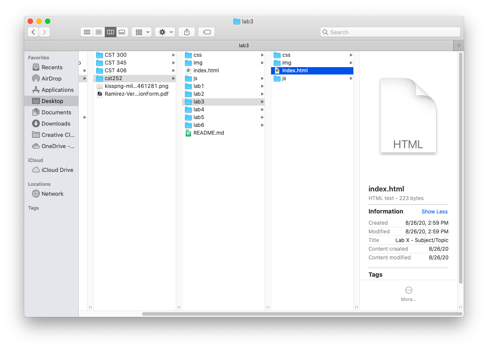
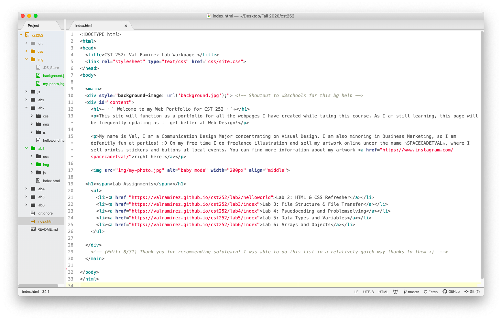
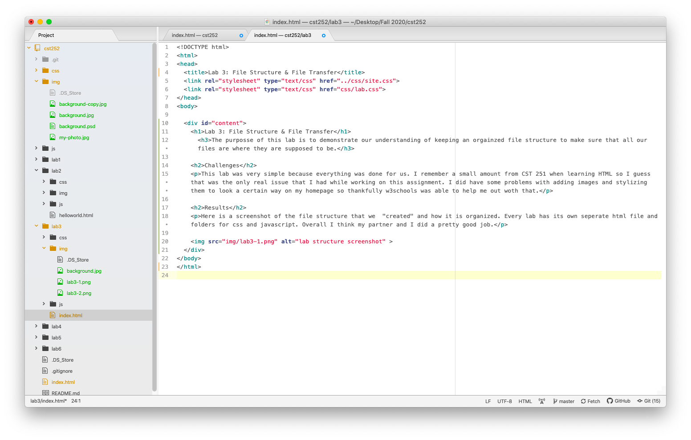
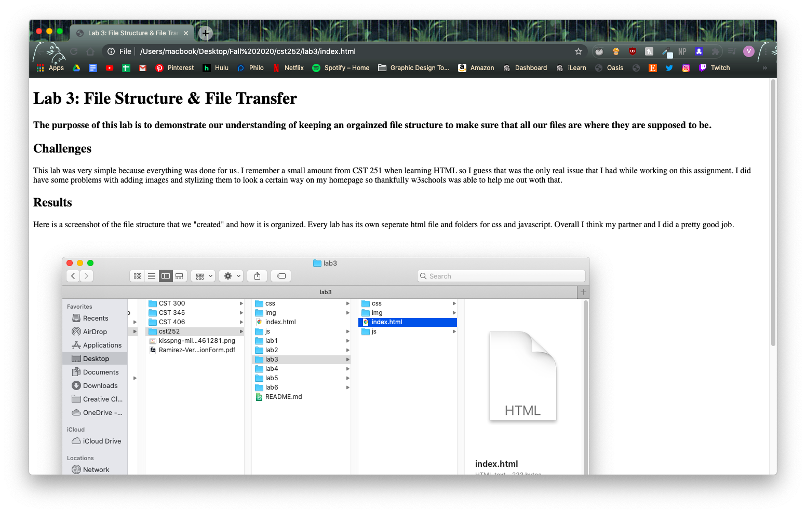

Lab 3: File Structure & File Transfer
The purposse of this lab is to demonstrate our understanding of keeping an orgainzed file structure to make sure that all our files are where they are supposed to be.
Challenges
This lab was very simple because everything was done for us. I remember a small amount from CST 251 when learning HTML so I guess that was the only real issue that I had while working on this assignment. I did have some problems with adding images and stylizing them to look a certain way on my homepage so thankfully w3schools was able to help me out woth that.
Results
Here is a screenshot of the file structure that we "created" and how it is organized. Every lab has its own seperate html file and folders for css and javascript. Overall I think my partner and I did a pretty good job.

This is a screenshot of my file structure.

This is a screenshot of the index.html before editing.

This is a screenshot of the index.html for lab 3.

This is a screenshot of the index.html for lab 3 before adding css.